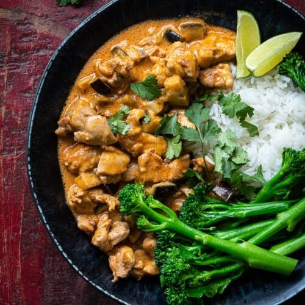

Rode Curry

Omschrijving
Mijn favoriete recept! Makkelijk in 40 minuten te bereiden. Smakelijk eten!
Ingrediënten
- 400 ml kokesmelk
- 2 eetlepels Koh Thai Rode Curry pasta
- 1 ui
- 1 aubergine (of een andere groente)
- 1 paksoi (of andere groene groente)
- 200 gram witte rijst
Stappen
- Bak de ui aan samen met de Koh Thai pasta voor 2 minuten
- Bak de aubergine mee voor 2 minuten
- Kook ondertussen de rijst
- Voeg de kokosmelk toe en laat zachtjes sudderen
- voeg na 5 minuten de paksoi toe
- Na ongeveer 10 a 15 minuten is de curry klaar. Serveer het samen met de rijst.
Smakelijk eten! :D